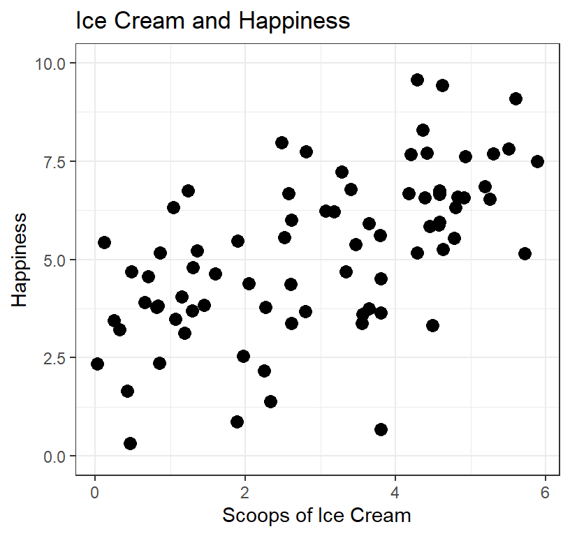
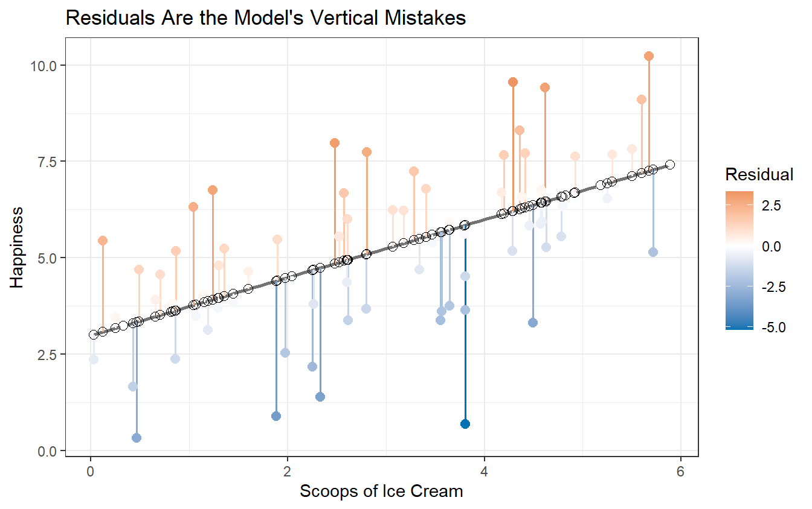
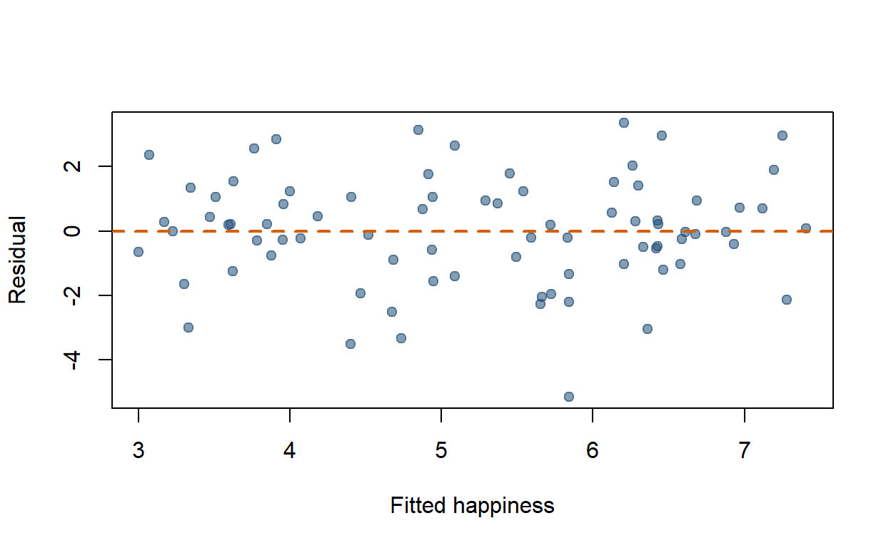
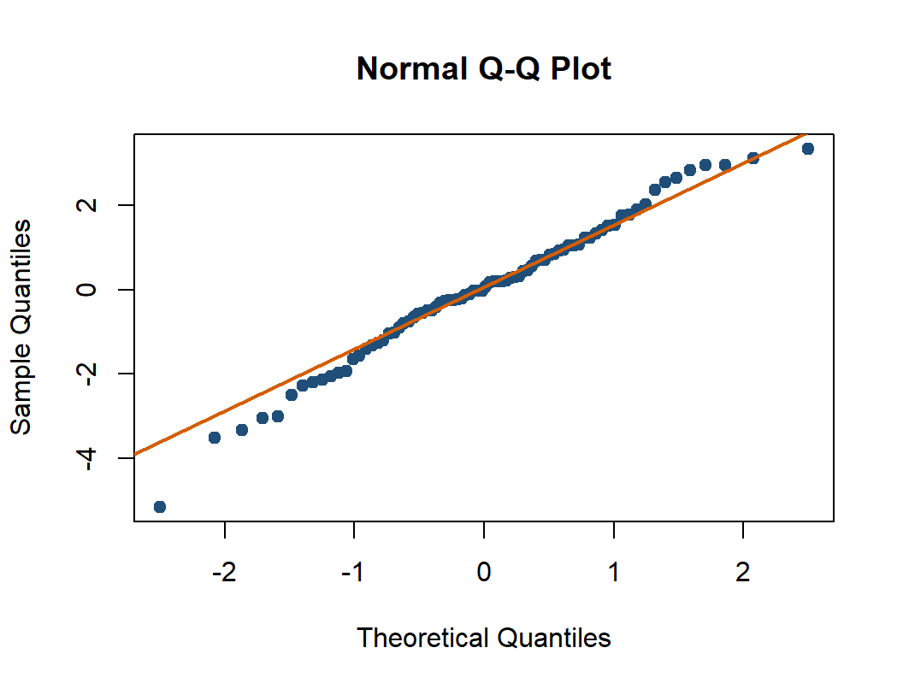
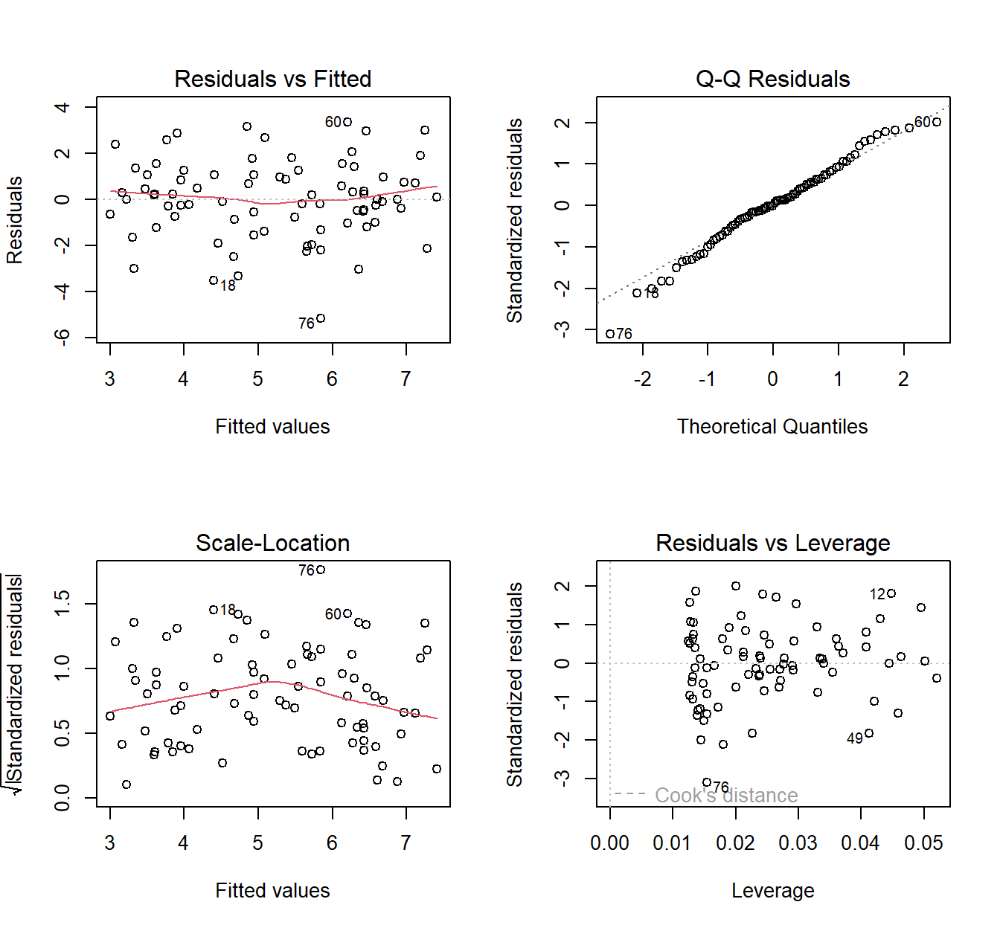

11 Linear Regression
11.1 The Number Correlation Refused to Give You
The last chapter ended on a complaint. Correlation tells you that two things move together and how tightly they do it, and then refuses to say anything more. It will not tell you why, which is a problem for theory. It also will not tell you how much, which is a problem for almost everything else.
You can hear the gap the moment you ask a practical question. If a student studies one more hour a week, how many exam points does that buy? An \(r\) of .45 cannot answer that, and not because it is being difficult. It threw the units away on purpose, back when we divided by both standard deviations to force the answer to sit politely between \(-1\) and \(+1\).
Regression puts the units back. It answers in points per hour, dollars per year, and scoops of ice cream per unit of happiness. Same relationship, same arithmetic underneath, but now the number means something you could act on.
That is the upgrade, and it is why the next eight chapters are built on this one.
11.2 Introduction to Regression
Many psychological studies ask: how does X predict Y? How does ice cream (IV) predict happiness (DV)?
Unlike the t-test (which compares group averages), regression looks at the relationship between two continuous variables. Predicting just means making an educated guess—if I know how much ice cream you ate, I can guess how happy you are. The guess won’t be perfect, but it should be reasonably close.
Regression tells us how close those guesses tend to be.
Regression predicts. It does not automatically explain causes. If people who eat more ice cream report greater happiness, ice cream may help, happier people may seek ice cream, hot weather may increase both, or the entire pattern may be driven by one billionaire buying all the cookie dough. Design and theory decide which causal stories remain plausible.
Note: The outcome in ordinary regression should be interval or ratio scale. In practice, psychologists use Likert scales all the time anyway and mostly get away with it, and there is more on that fight later. Predictors are far less picky. Over the next few chapters we will feed regression categorical variables on purpose, and it will thank us for it.
11.2.1 The Experiment
I bought several tubs of vanilla ice cream, scooped out different amounts, and handed them to students. After eating, they rated their happiness on a 0–10 “feelings thermometer.” Nobody got zero scoops, but some got barely a teaspoon.
11.2.2 Why not just use correlation?
You can, and correlation is often the first step. But correlation only handles two variables at a time. Regression lets us add more predictors: ice cream plus hot fudge plus cookie dough. In other words, regression scales up in ways correlation can’t.
Here’s the correlation:
library(apa)
apa(cor.test(dat$Scoops, dat$Happiness))[1] "*r*(78) = .60, *p* < .001"Strong positive correlation, as expected!
11.3 Regression Theory
Correlation and regression describe the same linear relationship, just differently.
- Simple linear regression = 1 DV and 1 IV. The relationship is a straight line representing the expected mean of Y for each value of X.
- Multiple regression = 1 DV and 2+ IVs. (Coming later.)
11.3.1 The Regression Equation
You probably remember from middle school: \(y = Mx + b\)
The modern version comes in two lines, and the difference between them matters more than almost anything else in this chapter.
\[Y = B_0 + B_1X + e\]
That is what the world does: model, plus miss.
\[\widehat{Y} = B_0 + B_1X\]
That is what the model predicts. No \(e\), because the model cannot know what it does not know.
Where:
- \(Y\) = observed value, the score the person actually gave you
- \(\widehat{Y}\) = predicted value, what the line says they should have given you
- \(B_1\) = slope (change in prediction per one-unit increase in X)
- \(B_0\) = intercept
- \(e\) = residual, the gap between the two (\(Y - \widehat{Y}\))
The hat is the whole distinction. \(Y\) is a fact about a person. \(\widehat{Y}\) is a guess about a person. Mixing them up is the single most common way to get lost in regression, and it will keep mattering all the way into the mixed models at the end of Part 2.
11.4 The Ice Cream Model
We fit regression models with lm() (linear model). Formula structure: DV ~ IV.
Happy.Model.1 <- lm(Happiness ~ Scoops, data = dat)
summary(Happy.Model.1)
Call:
lm(formula = Happiness ~ Scoops, data = dat)
Residuals:
Min 1Q Median 3Q Max
-5.1621 -0.9242 0.0332 1.0608 3.3565
Coefficients:
Estimate Std. Error t value Pr(>|t|)
(Intercept) 2.9799 0.3863 7.715 3.35e-11 ***
Scoops 0.7524 0.1127 6.675 3.25e-09 ***
---
Signif. codes: 0 '***' 0.001 '**' 0.01 '*' 0.05 '.' 0.1 ' ' 1
Residual standard error: 1.681 on 78 degrees of freedom
Multiple R-squared: 0.3636, Adjusted R-squared: 0.3554
F-statistic: 44.56 on 1 and 78 DF, p-value: 3.246e-0911.4.1 Reading the Output Without Panic
That block is the most-stared-at object in your regression course. You will meet it in every remaining chapter, it will grow extra rows, and at 2 a.m. before an assignment it will look like a ransom note. So here is what each region is, top to bottom.
Call. Your own formula, echoed back. Worth an actual glance, because this is where you find out you regressed the wrong variable.
Residuals. A five-number summary of the leftovers, the \(e\) from the equation above. You are looking for a median near zero and roughly symmetric ends. Ours run from -5.16 to 3.36, which means the model’s worst miss was about 5.2 happiness points. Nobody is being lied to catastrophically.
Coefficients table. Four columns, one row per term:
- Estimate is \(B\). The intercept row is \(B_0\), the
Scoopsrow is \(B_1\). - Std. Error is the standard error of that estimate. Same species as the SEM from the standard error chapter: run the study again with 80 different people and the slope would bounce around by roughly this much.
- t value is Estimate divided by Std. Error. That is the one-sample t-test logic, wearing a different kimono: how many standard errors is this estimate away from zero?
- Pr(>|t|) is that t’s p-value, testing the null that this coefficient is really zero (no slope).
Residual standard error. The typical size of a miss, in the outcome’s own units. Ours is 1.68, so a typical prediction is off by about 1.7 happiness points. The on 78 degrees of freedom is the \(N-2\) we paid for in the correlation chapter, and for the same reason: two parameters estimated, this time an intercept and a slope.
Multiple R-squared. The proportion of outcome variance the model accounts for. There is a whole section on it below.
F-statistic. The test of the entire model at once, rather than one coefficient at a time. With a single predictor it is telling you exactly what the slope’s t-test already told you, and we can prove that:
t.for.slope <- summary(Happy.Model.1)$coefficients["Scoops", "t value"]
t.for.slope^2 # square the slope's t[1] 44.55917summary(Happy.Model.1)$fstatistic[1] # the model's F value
44.55917 Identical. With one predictor, \(F = t^2\), because “is this one slope non-zero” and “does this model do anything at all” are the same question asked twice. That stops being true the moment we add a second predictor, which is precisely when \(F\) starts earning its keep, in the hierarchical regression chapter.
TipThe Two Numbers Everyone Skips
Students read the Estimate and the p-value and stop. The two most useful numbers in that block are the ones they scroll past: the Std. Error, which tells you how much to trust the estimate, and the Residual standard error, which tells you in plain units how wrong a typical prediction is.
A slope of 0.75 with typical misses of 1.7 happiness points is a very different finding from the same slope with typical misses of 0.2. The p-value cannot tell those apart. You can.
11.4.2 Intercept
The intercept is the predicted happiness when ice cream = 0.
range(dat$Scoops)[1] 0.02927577 5.88743768Nobody had zero scoops, so we can’t actually interpret this directly. Never predict outside the range of your data. (We can fix this by centering X, more on that later.)
11.4.3 Slope
The slope is 0.752. For each additional scoop, happiness changes by that amount.
11.4.4 Making a prediction
The equation: \(Y = B_0 + B_1X\)
What’s the predicted happiness for someone who eats 5 scoops?
- \(Y = 2.98 + (0.752 \times 5)\)
- \(Y = 6.742\)
11.5 Predicted Values and Residuals
The line gives one predicted happiness score for every amount of ice cream. Real people do not sit perfectly on that line because humans are noisy, stubborn, and occasionally having a terrible day for reasons unrelated to dessert.
A residual is the distance between the observed score and the model’s prediction:
\[ e_i=Y_i-\widehat{Y}_i. \] - A positive residual means the person was happier than the model predicted. - A negative residual means the person was less happy than the model predicted. - A residual of zero means the prediction was exactly right, which is suspiciously cooperative behavior from a human.
R stores both pieces inside the fitted model:
dat$Predicted <- fitted(Happy.Model.1)
dat$Residual <- residuals(Happy.Model.1)
head(dat[c("Scoops", "Happiness", "Predicted", "Residual")]) Scoops Happiness Predicted Residual
1 0.4874424 4.689709 3.346669 1.3430399
2 2.7996025 3.676425 5.086421 -1.4099958
3 4.1977287 7.669921 6.138422 1.5314991
4 4.7945917 6.331497 6.587523 -0.2560254
5 3.3393869 4.690570 5.492574 -0.8020041
6 5.2990277 7.685625 6.967079 0.7185465mean(dat$Residual)[1] 1.283102e-17The residuals have a mean of approximately zero because ordinary least squares (i.e., math that finds the best line) tries to balance the line through the data such that the positive and negative mistakes cancel out.
ggplot(dat, aes(x = Scoops, y = Happiness)) +
geom_smooth(method = "lm", se = FALSE, color = "gray45") +
geom_segment(
aes(xend = Scoops, yend = Predicted, color = Residual),
linewidth = 0.7
) +
geom_point(aes(color = Residual), size = 2.5) +
geom_point(aes(y = Predicted), shape = 1, size = 2.5) +
scale_color_gradient2(low = "#0072B2", mid = "white", high = "#D55E00") +
labs(
title = "Residuals Are the Model's Vertical Mistakes",
x = "Scoops of Ice Cream",
y = "Happiness"
) +
theme_bw()
The filled points are observed happiness. The hollow points are predicted happiness. Each vertical segment is one residual. This is the error the model did not explain.
11.6 Why This Line and Not Some Other Line?
Nothing so far has explained where the line came from. R drew one, we believed it. But an infinite number of straight lines could be drawn through that cloud of points, so something had to choose.
Here is the rule. Take any line you like. Measure every vertical miss, square each one, and add them all up. That total is the line’s score, and lower is better. The regression line is the line that makes that total as small as it can possibly be. That is the entire idea, and it is what least squares means.
We can check that R did its job. The fitted line’s squared misses:
sum(residuals(Happy.Model.1)^2)[1] 220.3025Now some rival lines. The first is the flattest possible one, a slope of zero, which ignores ice cream entirely and predicts the mean happiness for everybody. The other two keep our intercept but guess the slope wrong:
b0 <- coef(Happy.Model.1)[1]
# Slope of 0: the mean-only model, ice cream tells us nothing
sum((dat$Happiness - mean(dat$Happiness))^2)[1] 346.155# Too steep
sum((dat$Happiness - (b0 + 1.5*dat$Scoops))^2)[1] 745.2635# Too flat
sum((dat$Happiness - (b0 + 0.3*dat$Scoops))^2)[1] 412.5871The fitted line wins, and it is not close. Every wrong slope costs you, and the further off you guess, the more it costs.
Why squared, and not just the raw misses? Because raw residuals sum to zero by construction, as we saw a moment ago. A criterion that adds up to zero for every possible line is a criterion that cannot choose between lines. Squaring kills the signs, which is exactly the trick variance pulled back in the distributions chapter, for exactly the same reason. It also means one enormous miss hurts far more than several small ones, which is a genuine design decision on the part of those who created regression.
Hold onto that mean-only number, 346.2. It is the score of a model with no predictor in it: your best guess before ice cream entered the room. The fitted line scores 220.3. The gap between those two numbers is what ice cream bought you, and turning that gap into a proportion is the entire content of the \(R^2\) section coming up.
11.7 The Assumptions: What Could Make the Line Lie?
Regression assumptions are claims about the errors left after fitting the line. They are not personality tests that the raw variables must pass before R permits them into the building.
For now, focus on five questions:
- Linearity: Is a straight line a reasonable summary of the average relationship?
- Independence: Are the residuals from different observations reasonably independent?
- Constant variance: Is the vertical spread of residuals roughly similar across fitted values?
- Approximately normal residuals: Are the residuals reasonably bell-shaped, especially for small-sample tests and intervals?
- Influential observations: Is one strange person steering the entire line while everyone else watches?
11.7.1 Residuals Versus Fitted Values
plot(
fitted(Happy.Model.1),
residuals(Happy.Model.1),
xlab = "Fitted happiness",
ylab = "Residual",
pch = 19,
col = grDevices::adjustcolor("#1F4E79", alpha.f = 0.55)
)
abline(h = 0, lty = 2, col = "#D55E00", lwd = 2)
The residuals-versus-fitted plot asks whether the model is making similar kinds of errors across the range of values it predicts. Each dot represents one observation.
- X-axis, Fitted values: what the regression model predicted for each observation.
- Y-axis, Residuals: how wrong that prediction was: observed - predicted. A residual of 0 means the model predicted the observation perfectly. Positive residuals mean the observed value was higher than predicted; negative residuals mean it was lower than predicted.
Ideally, we want a fairly boring cloud of points scattered around zero, with roughly the same vertical spread from left to right. Boring is good here. It means the model is not making errors in an obvious, systematic way.
A curve suggests that the straight-line model missed a nonlinear pattern. For example, if residuals tend to be positive, then negative, then positive again as fitted values increase, the relationship may have a bend that our straight regression line cannot capture.
A funnel suggests heterogeneity of variance, also called heteroscedasticity: the model’s errors are much more variable for some predicted values than for others. Note: This is a word I have been teaching since about 2008 and still cannot reliably say out loud.
Why care? Ordinary regression calculates standard errors under the assumption that the residual variance is reasonably constant. Strong heteroscedasticity can therefore make standard errors and confidence intervals inaccurate.
But changing variance can also reveal something psychologically interesting. Perhaps ice cream affects people similarly at low doses but produces wildly different reactions after the fourth scoop. Some people achieve joy. Others remember lactose intolerance.
WarningHeterogeneity May Be a Clue, Not Merely a Violation
Changing residual spread can mean that uncertainty differs across people, conditions, or levels of the outcome. Do not immediately transform the outcome until the graph stops complaining. First ask what process could create the pattern.
11.7.2 The Q-Q Plot
qqnorm(residuals(Happy.Model.1), pch = 19, col = "#1F4E79")
qqline(residuals(Happy.Model.1), col = "#D55E00", lwd = 2)
A Q-Q plot asks whether the residuals have roughly the shape we would expect from a normal distribution. Each dot represents one residual, after the residuals have been sorted from smallest to largest.
- X-axis: where a residual should fall if the residuals followed a perfect normal distribution. These are called theoretical quantiles.
- Y-axis: where the residual actually falls in our data. These are the observed residuals (or, depending on the software, standardized residuals).
If the residuals are approximately normal, the observed values should line up with the values expected from a normal distribution, producing dots that fall roughly along a straight line. In other words, the x-axis says, “If these residuals were perfectly normal, how extreme should this observation be?” and the y-axis says, “How extreme was it actually?”
Do not expect perfection. Small wiggles and deviations are normal, because we collected data from humans, not from androids or clones. What we care about are systematic departures from the line: strong curves can indicate a distribution with the wrong shape, while points breaking away at either end can indicate unusually heavy tails or potential outliers. One observation escaping toward Canada probably means something went wrong for that one person. All of them running for the border means something went wrong with the whole model.
R can produce four standard diagnostic plots at once:
par(mfrow = c(2, 2))
plot(Happy.Model.1)
par(mfrow = c(1, 1))
The first two are the residual-versus-fitted and Q-Q plots we just learned. The other two help identify unequal spread and influential observations. You do not need to master them yet. The advanced diagnostics chapter returns with more detail and several additional ways for data to misbehave.
11.8 Residual Variance and \(R^2\)
Before using ice cream to predict happiness, our best simple guess for everyone was the mean. The total variance describes how far scores spread around that mean. After fitting the model, residual variance describes how far scores spread around the regression line.
Those are the two lines we just raced. The mean-only model was the flat one that lost; the fitted line was the one that won. \(R^2\) is simply that race expressed as a proportion: of all the spread we started with, what fraction did the line manage to account for?
TotalVariance <- var(dat$Happiness)
ResidualVariance <- var(residuals(Happy.Model.1))
c(TotalVariance = TotalVariance,
ResidualVariance = ResidualVariance,
R_squared_from_variance = 1 - ResidualVariance / TotalVariance,
R_squared_from_model = summary(Happy.Model.1)$r.squared) TotalVariance ResidualVariance R_squared_from_variance
4.3817090 2.7886391 0.3635727
R_squared_from_model
0.3635727 \(R^2\) describes the proportion of observed outcome variance explained by the fitted model. It is an effect-size measure for the model, not proof that the model is causal, correct, or ready to be tattooed onto your arm.
11.9 Relationship to Correlation
Why did we start with correlation if regression is so great? To show they’re the same thing, just scaled differently. Run a regression on standardized (z-scored) variables:
dat$Happiness.z <- scale(dat$Happiness)
dat$Scoops.z <- scale(dat$Scoops)
std.reg <- lm(Happiness.z ~ Scoops.z, data = dat)
summary(std.reg)
Call:
lm(formula = Happiness.z ~ Scoops.z, data = dat)
Residuals:
Min 1Q Median 3Q Max
-2.46608 -0.44152 0.01588 0.50675 1.60349
Coefficients:
Estimate Std. Error t value Pr(>|t|)
(Intercept) -2.037e-16 8.976e-02 0.000 1
Scoops.z 6.030e-01 9.033e-02 6.675 3.25e-09 ***
---
Signif. codes: 0 '***' 0.001 '**' 0.01 '*' 0.05 '.' 0.1 ' ' 1
Residual standard error: 0.8029 on 78 degrees of freedom
Multiple R-squared: 0.3636, Adjusted R-squared: 0.3554
F-statistic: 44.56 on 1 and 78 DF, p-value: 3.246e-0911.9.1 What didn’t change?
The t-statistic and p-value for the slope. These don’t change under any linear rescaling: adding constants, multiplying by constants, z-scoring. Shift and stretch the axes all you like and the significance test is untouched.
Nonlinear transformations are a different animal. Logs, square roots, and powers change the model itself, along with \(t\), \(p\), and what the slope even means. The correlation chapter showed this the hard way with ice cream raised to the fourth power, where a perfectly good relationship fell apart the moment we bent the scale.
11.9.2 What changed?
The intercept is now zero. When all variables are standardized (mean = 0), the regression line must pass through [0, 0]. And the slope changed numerically:
print(summary(std.reg), digits = 6)
Call:
lm(formula = Happiness.z ~ Scoops.z, data = dat)
Residuals:
Min 1Q Median 3Q Max
-2.466080 -0.441520 0.015876 0.506753 1.603487
Coefficients:
Estimate Std. Error t value Pr(>|t|)
(Intercept) -2.03715e-16 8.97626e-02 0.00000 1
Scoops.z 6.02970e-01 9.03290e-02 6.67527 3.2461e-09 ***
---
Signif. codes: 0 '***' 0.001 '**' 0.01 '*' 0.05 '.' 0.1 ' ' 1
Residual standard error: 0.802862 on 78 degrees of freedom
Multiple R-squared: 0.363573, Adjusted R-squared: 0.355413
F-statistic: 44.5592 on 1 and 78 DF, p-value: 3.24612e-09cor.test(dat$Happiness, dat$Scoops)
Pearson's product-moment correlation
data: dat$Happiness and dat$Scoops
t = 6.6753, df = 78, p-value = 3.246e-09
alternative hypothesis: true correlation is not equal to 0
95 percent confidence interval:
0.4417814 0.7264454
sample estimates:
cor
0.6029699 The standardized slope equals the correlation. Not a coincidence.
When everything is standardized, one unit = one SD. So the correlation tells us: every time X increases by 1 SD, Y increases by \(r\) SDs. Standardized regression slopes are called beta weights (\(\beta\)).
11.9.3 Converting slope back to raw units
\[B_1 = r \frac{sd_y}{sd_x} = \frac{Cov(x,y)}{Var(x)}\]
Your slope is just the correlation times the ratio of SDs. Makes sense, since slope is rise over run:
- Double Y → twice as much rise → \(B_1\) doubles
- Double X → twice as much run → \(B_1\) is cut in half
11.9.4 What about the intercept?
Once you know \(B_1\), you know the angle of the line. But the line must also pass through [mean(X), mean(Y)]:
mean(dat$Scoops)[1] 2.993878mean(dat$Happiness)[1] 5.232601\[Mean(Y) = B_0 + B_1 \times Mean(X)\]
Solve for \(B_0\) and you’re done.
11.10 APA Style Report
Here is how the whole thing gets written up. Every number below is computed from the model rather than typed, which is why it cannot go stale when the data change.
Ice cream consumption significantly predicted happiness, \(b =\) 0.75, \(SE =\) 0.11, \(\beta =\) .60, \(t(78) =\) 6.68, \(p < .001\). The overall model explained 36.4% of the variance in happiness, \(R^2 =\) .364, \(F(1, 78) =\) 44.56, \(p < .001\).
Then say what it means in words a human would use:
Each additional scoop predicted about 0.75 more points of happiness on the 0 to 10 thermometer.
A few things to notice, because this paragraph is the template for every regression write-up in the rest of the book:
- Report \(b\) and \(SE\) and \(t\) and \(p\) for the predictor. The slope alone is not a result, it is half of one.
- Report the model as a whole with \(R^2\) and \(F\), including both degrees of freedom: \(F(1, 78)\). The 1 is the number of predictors, the 78 is \(N-2\).
- That \(\beta\) of .60 should look familiar. It is the correlation from the top of this chapter, which is the payoff we proved a section ago. In simple regression you can report either (or both), but never present them as two separate findings.
- The plain-English sentence is not optional decoration. Being able to say what your slope means in the units your grandmother would understand is a graded skill, in this course and in every paper you will ever write.
Warningp < .001 Is a Claim, Not a Default
The write-up above says \(p < .001\) because this model’s p-value genuinely is 3.25e-09. Report the exact value to two or three decimals whenever it is larger than .001, and never copy p < .001 out of an example because it looked authoritative.
11.11 The Short Story
- Simple linear regression predicts a quantitative outcome from one predictor.
- The intercept is the predicted outcome when \(X=0\).
- The slope is the expected change in \(Y\) for a one-unit increase in \(X\).
- The line is chosen by least squares: of all possible lines, it is the one with the smallest total of squared vertical misses.
- In the
summary()output, Std. Error says how much to trust the estimate and Residual standard error says how wrong a typical prediction is. With one predictor, \(F = t^2\). - Residuals are observed outcomes minus predicted outcomes: the model’s leftovers.
- \(R^2\) is the proportion of observed outcome variance explained by the fitted linear model.
- With one predictor, the standardized slope equals Pearson’s \(r\).
- Prediction is not causation. A straight line cannot randomize participants, control confounds, or stop Reviewer 2 from asking whether heat explains the ice cream.
ImportantA Slope Always Has Units
The slope is the expected change in \(Y\) for a one-unit increase in \(X\). Before deciding that it is large, small, heroic, or pathetic, say what one unit of \(X\) and one unit of \(Y\) actually mean.
NoteCredit
I stole Ryne Estabrook way of explaining least squares cause it was better than mine. Also probably other things.